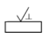
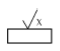
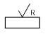
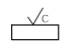

건설기계정비기능사 (2006-01-22 기출문제)
1과목: 건설기계정비(임의구분)
1. 실린더 체적이 1000 cc 이고 행적체적이 850 cc 인 엔진의 압축비는?
- 5.60 : 1
- 6.67 : 1
- 5.67 : 1
- 7.52 : 1
(정답률: 57%)

2. 캠축 캠의 마모가 심할 때 일어나는 현상 중 틀린 것은?
- 흡배기 효율이 낮아진다
- 소음이 심해진다.
- 밸브 간극이 작아진다
- 밸브의 유효행정이 적어진다.
(정답률: 68%)
3. 120 AH 의 축전지가 매일 1% 자기방전을 한다. 이것을 보완키 위하여 미전류 충전기의 충전전류는 몇 A로 조정 하면 되겠는가?
- 0.⑤ A
- 0.1 A
- 0.12 A
- 0.5 A
(정답률: 29%)
4. 건설기계의 자동 에어컨에서 사용되는 센서에 해당되지 않는 것은?
- 외기센서
- 세핑센서
- 일사센서
- 실내온도센서
(정답률: 69%)
5. 디젤기관에서 시동을 용이하게 하는 장치에 해당되지 않는 것은?
- 디콤프 장치
- 글로우 플러그 장치
- 터보차져 장치
- 연소 촉진제 공급장치
(정답률: 68%)
6. 혼을 축전지에 직접 연결하였을 때에는 작동되나 건설기계 에 장착 하였을 때에는 작동되지 않았을 경우에 그 원인이 아닌 것은?
- 퓨즈의 소손
- 혼 릴레이 작동 불량
- 혼 스위치 불량
- 축전지 전압이 낮을 때
(정답률: 77%)
7. 다음과 같이 AC발전기 정비시 유의사항을 설명한 것 중 잘못 설명된 것은?
- 차에 장착된 채로 조정기의 전압조정을 행할 때에는 반드시 점화스위치를 끊고서 행해야 한다.
- 다이오드 표면에 물이 닿으면 발전불량이 되기 쉬워 조심해야한다.
- 다이오드 점검시에는 메거를 사용하여 고전압을 가해서 한다.
- 발전기 및 조정기의 B단자 F단자를 접지시켜서는 절대로 안된다.
(정답률: 77%)
8. 배기가스(gas)중 검은 연기를 내는 원인이 아닌 것은?
- 압축압력이 낮아 압축온도가 낮을 때
- 노즐에서 관통력과 무화가 강할 때
- 분사시기가 나쁠 때
- 노즐로 부터 분사상태가 나쁠 때
(정답률: 66%)
9. 디젤기관 연료 분사계통에 널리 쓰이는 펌프는?
- 터빈펌프
- 기어펌프
- 다이어프램 펌프
- 플런저 펌프
(정답률: 86%)
10. 저속 상태가 나쁘고 회전이 일정하지 아니할 때의 원인으로 틀린 것은?
- 노즐 분사압력이 일정치 않다.
- 노즐의 무화상태가 불량하다.
- 거버너(조속기)스프링의 장력이 정상이다.
- 플런저의 송유량이 일정치 못하다.
(정답률: 90%)
11. 4행정 디젤기관의 흡기밸브가 상사점 전 10도 에서 열리고 하사점 후 15도 에서 닫혔다. 배기밸브가 하사점 전 20도 에서 열리고 상사점 후 15도에서 닫혔다면 이 기관에 밸브오버랩 각은 몇 도 인가?
- 20
- 25
- 30
- 35
(정답률: 53%)
12. 피스톤 링에 대한 설명 중 맞는 것은?
- 크롬 도금한 링은 마멸이 적으므로 분해 정비할 때마다 갈아 끼우지 않아도 된다.
- 바깥 둘레가 테이퍼 되어 있는 링은 지름이 큰 쪽을 아래로 하여 끼운다.
- 링의 이음 간극은 제2링보다 톱링쪽을 적개 한다.
- 크롬 도금한 링은 크롬도금한 실린더에 사용한다.
(정답률: 54%)
13. 다음 중 전자제어 연료분사장치의 온도 센서로 가장 많이 사용되는 것은?
- 저항
- 다이오드
- TR
- NTC 서미스터
(정답률: 74%)
14. 실린더 블록의 윤활유 통로 막힘의 검사방법으로 가장 좋은 것은?
- 철사를 넣어 검사한다.
- 유압에 의하여 검사한다.
- 압축공기로 검사한다
- 물을 넣어가며 검사한다.
(정답률: 72%)
15. 건설기계의 머플러나 소음기에 카본이나 찌꺼기가 많이 쌓이면 어떻게 되는가?
- 역화발생
- 엔진의 과냉
- 엔진의 과열
- 폭발압력이 높아진다.
(정답률: 74%)
16. 윤활유의 작용이 아닌 것은?
- 응력분산작용
- 밀봉작용
- 방청작용
- 산화작용
(정답률: 73%)
17. 스프링의 재료로써 갖추어야할 성질이 아닌 것은?
- 탄성계수가 커야 한다.
- 탄성한도가 높아야 한다.
- 피로한도가 낮아야 한다.
- 크리프 한도가 높아야 한다.
(정답률: 61%)
18. 선반에서 테이퍼를 깎는 방법이 아닌 것은?
- 복식공구대 이용
- 테이퍼 절삭장치 이용
- 백기어를 사용한 방법
- 심압대 편위에 위한 방법
(정답률: 60%)
19. 미세한 숫돌가루를 사용해 공작물의 표면을 매끈하게 다듬 질는 방법으로 처음에는 탄화수소계의 분말을 사용하고, 완성용으로는 산화 알루미늄계를 사용하는 정밀도가 높은 부품의 제작시 주로 사용되는 정밀 가공방법은?
- 호닝
- 수퍼피니싱
- 래핑
- 폴리싱
(정답률: 45%)
20. 용접에서 모재와 용착금속의 경계부분에 오목하게 파여 들어간 것을 무엇이라 하는가?
- 스패터(spatter)
- 슬래그(slag)
- 오버랩(overlap)
- 언더컷(undercut)
(정답률: 69%)
2과목: 일반기계공학(임의구분)
21. 치수기입법 중 두께 3 mm의 판을 표시하는 방법은?
- R3
- C3
- t3
- □3
(정답률: 65%)
22. 아크가 발생하는 초기에 용접봉과 모재가 냉각되어 있어 입열이 부족하여 아크가 불안정하기 때문에 아크 초기만 용접 전류를 특별히 크게 하는 것을 무엇이라 하는가?
- 원격 제어 장치
- 핫 스타트 장치
- 전격 방지 장치
- 탭 전환 장치
(정답률: 78%)
23. 델타 메탈"(delta metaldl)이란?
- 7.3 황동에 1~2%의 Sn을 첨가한 합금
- 7.3 황동에 1~2%의 Fe를 첨가한 합금
- 6.4 황동에 1~2%의 Sn을 첨가한 합금
- 6.4 황동에 1~2%의 Fe를 첨가한 합금
(정답률: 38%)
24. 다음 줄무늬 방향의 기호 중 가동으로 생긴 선이 거의 동심원인 것을 표시하는 항은?




(정답률: 45%)
25. ABC나사라고도 하며 나사산의 각이 60도인 나사는?
- 관용나사
- 유니파이 나사
- 애크미 나사
- 테이퍼 나사
(정답률: 55%)
26. 용접시 외부에서 주어지는 용접입열을 계산하는 공식으로 맞는 것은?(단, H : 용접입열(J/cm). I: 아크전류(A), E: 아크전압(V), V: 용접속도 (cm/min) 이다.)
- H=V/60EI
- H=60EI/V
- H=60EV/I
- H=60VI/E
(정답률: 57%)
27. 다음 중 보통 선반의 크기로 표시되지 않는 것은?
- 베드 위의 스윙
- 선반의 중량
- 양 센터 사이의 거리
- 왕복대 위의 스윙
(정답률: 72%)
28. 스퍼 기어에서 피치원의 지름이 150 mm이고, 잇수가 50 일 때 모듈(module)은?
- 5
- 4
- 3
- 2
(정답률: 77%)
29. 운전 중 회전을 자유로이 단속할 수 있는 축이음은?
- 클러치
- 플랜지 조인트
- 커플링
- 유니버설 조인트
(정답률: 38%)
30. 너트의 풀림을 방지하는 것이 아닌 것은?
- 스프링 와셔
- 아이 너트
- 로크 너트
- 분할 핀
(정답률: 50%)
31. 탄소강에서 적열취성(red shortness)을 일으키는 원소는?
- S
- P
- Mn
- Si
(정답률: 35%)
32. 클러치를 정비하여 설치한 후 소음 검사를 할 때 자동차의 운전상태로 가장 적당한 것은?
- 가속 운전시
- 감속 운전시
- 공전 운전시
- 등속 운전시
(정답률: 55%)
33. 복스렌치가 오픈 엔드 렌치보다 더 사용되는 가장 중요한 이유는?
- 볼트, 너트 주위를 완전히 싸게 되어 있어서 사용 중에 미끄러지지 않는다.
- 여러가지 크기의 볼트, 너트에 사용할 수 있다.
- 값이 싸며, 적은 힘으로 작업할 수 있다.
- 가볍고, 사용하는데 양손으로도 사용할 수 있다.
(정답률: 77%)
34. 고압가스 용기의 도색 중 옳게 표시된 것은?
- 산소 - 적색
- 수소 - 흰색
- 아세틸렌 - 노란색
- 액화암모니아 - 파란색
(정답률: 68%)
35. 연삭작업상 안전지침을 설명하였다. 적당치 않는 것은?
- 숫돌차의 회전은 규정이상을 초월해서는 안된다.
- 방진안경을 반드시 써야 한다.
- 스위치를 넣은 다음 약 3분 공전상태를 확인후 작업해야한다
- 숫돌차의 정면에 서서 연삭하는 것이 안전하다.
(정답률: 88%)
36. 회로시험기로 전기회로의 측정 점검을 하고자 한다. 측정기 취급이 잘못된 것은?
- 테스트 리드의 적색은 + 단자에, 흑생은 - 단자에 꽃는다
- 전류를 측정시는 회로를 연결하고 그 회로에 병렬로 테스터를 연결 하여야 한다.
- 각 측정 범위의 변경은 큰 쪽 부터 작은 쪽으로 하고 역으로 하지 않은다.
- 중앙 손잡이 위치를 측정 단자에 합치시켜야 한다.
(정답률: 43%)
37. 다음 중 사고로 인한 재해가 가장 많이 발생하는 기계 장치는?
- 기관
- 벨트풀리
- 래크
- 동력전달장치
(정답률: 79%)
38. 가스용접 작업시 안전관리에 관한 설명으로 틀린 것은?
- 산소누설 시험은 비눗물을 사용한다
- 토치 끝으로 용접물의 위치를 바꾸거나 재를 제거하면 안된다.
- 토치에 점화할 때레는 성냥불과 담배불로 사용하여도 무방하다.
- 산소 봄베와 아세틸렌 봄베 가까이에서는 불꽃 조정을 피해야 한다.
(정답률: 87%)
39. 차량의 적재함 뒤로 나오는 긴 물건을 운반시 위험을 표시 하는 방법으로 가장 적절한 방법은?
- 뒷 부분에 깃대를 꽂고 운반한다.
- 물건 끝 부분에 진한 청색을 칠하고 운반한다.
- 긴 물건 뒷부분에 적색으로 표시하고 운반한다.
- 적재함에 회색으로 위험표시를 한다.
(정답률: 75%)
40. 리머가공에 관련하여 올바르게 설명한 것은?
- 리머는 직경 10mm 이상의 것은 없다.
- 리머는 드릴 구멍보다 먼저 작업한다.
- 리머는 드릴 구멍보다 더 정밀도가 높은 구멍을 가공 하는데 필요하다.
- 리머는드릴 구멍보다 더 작게 하는데 사용한다.
(정답률: 78%)
3과목: 안전관리(임의구분)
41. 실린더가 마멸되었을 때 일어나는 현상이 아닌 것은?
- 압축, 압력의 저하
- 출력의 저하
- 연료의 소모 저하
- 열효율의 저하
(정답률: 89%)
42. 일반적으로 작업 중 작동유의 최저, 최고 허용온도는 약 몇 도 인가?
- 40~80
- 20~50
- 40~100
- 20~90
(정답률: 56%)
43. 무한궤도(크롤러)형 굴삭기 주행속도가 정상보다 느릴 경우의 원인을 열거 하였다. 옳지 않은 것은?
- 피스톤펌프의 사판 경사각이 작게 조정되어 있다.
- 릴리프밸브의 압력이 낮게 조정되어 있다.
- 유압유 점도가 너무 낮다
- 교축밸브의 출구가 작게 열려 있다.
(정답률: 27%)
44. O-링의 설치시 주의사항에 해당되지 않는 것은?
- 실(seal)을 꼬이지 않도록 한다.
- 실(seal)의 상태를 검사한다.
- 실(seal)에 윤활유를 바른다.
- 실(seal)의 운동 면을 손상시키지 않는다.
(정답률: 68%)
45. 건설기계의 구동축을 분리하고 허브 시일을 점검한 결과 정상인 것은?
- 허브 내의 시일 접촉부가 광이나고 단계가 진 부분이 보이지 않는다.
- 시일 내면의 접촉부가 약간 긁혀있다.
- 시일 내면의 마모부위가 0.1mm 미만의 흡집이 보인다.
- 시일 내면은 마모나 변형이 있어도 누유가 없으면 교환할 필요는 없다.
(정답률: 85%)
46. 지게차의 전ㆍ후방 안전 경사각도는 무엇으로 조정하는가?
- 리프트 실린더 브라켓
- 리프트 실린더 로드
- 틸트 실린더 브라켓
- 틸트 실린더 로드
(정답률: 58%)
47. 다음 건설기계의 유압장치 구조 중 유압에너지를 기계적 에너지로 변환시켜주는 일을 하는 것은?
- 오일 제어 밸브
- 유압 액츄에이터
- 유압 펌프
- 오일 탱크
(정답률: 70%)
48. 유압 셔블의 주행 및 선회의 힘이 약하다. 그 원인으로 다음 중 가장 적합한 것은?
- 흡입 스트레이너가 막혔다.
- 릴리프 밸브의 설정압이 높다.
- 작동유의 온도가 높다.
- 축압기가 파손되었다.
(정답률: 57%)
49. 건설기계의 공기브레이크에서 유압브레이크의 휠 실린더와 같은 기능을 하는 것은?
- 브레이크 쳄버
- 브레이크 밸브
- 릴레이 밸브
- 퀵 릴리스 밸브
(정답률: 56%)
50. 건설기계에서 트랙의 캐리어 롤러(carrier roller)는 무슨 일을 하는가?
- 전부 유동륜을 고정한다
- 트랙을 지지한다
- 가동륜을 지지한다
- 스프링을 지지한다.
(정답률: 47%)
51. 불도져의 뒤쪽 케이스 뒷면에 있는 유압리퍼는 일반적으로 몇 개의 섕크(shank)로 구성되어 있나?
- 1~5개
- 6~10개
- 10~15개
- 8~12개
(정답률: 63%)
52. 모터그레이더에서 기어가 잘 안들어 가는 원인에 대힌 설명이다. 해당되지 않는 것은?
- 디스크 페이싱 마모
- 클러치 브레이크의 작동 불량
- 클러치 스프링의 이완
- 페달의 유격과다
(정답률: 35%)
53. 건설기계 종류별 용도를 설명한 것 중 틀린 것은?
- 모우터 그레이더: 제설, 파이프 매설, 배수로 제방작업에 사용
- 기중기: 중화물 적하 및 운반과 굴토작업에 이용
- 도저: 트랙터의 작업능력에 따라 삽을 장치한 것
- 로울러: 싣기, 운방, 하역 등의 일반작업을 할 수 있는 기계
(정답률: 54%)
54. 유압장치에 사용되는 오일 실이다. 운동용 실은?
- 실 테이프
- 금속 실
- 메카니컬 실
- 액체 실
(정답률: 57%)
55. 다음 불도저의 클러치 정비에 대한 설명 중 틀린 것은?
- 주 압력 안전밸브가 열린채 고착되어 있으면 압력이 낮다.
- 주 압력 안전밸브의 스프링이 약해져 있으면 압력이 낮다.
- 변속기 케이스의 흡입 스크린이 막혀 있으면 압력이 높다.
- 모듈레이팅 밸브커버 밑의 심이 두꺼우면 압력이 높다.
(정답률: 47%)
56. 라인 릴리프 밸브와 시스템 릴리프 밸브의 압력 관계를 가장 적합하게 표시한 것은?
- 라인 릴리프밸브 압력 ＜ 시스템 릴리프밸브 압력
- 라인 릴리프밸브 압력 = 시스템 릴리프밸브 압력
- 라인 릴리프밸브 압력 ＞ 시스템 릴리프밸브 압력
- 라인 릴리프밸브 압력 ≤ 시스템 릴리프밸브 압력
(정답률: 60%)
57. 유체토크 변환기의 구성 3요소에 해당되지 않는 것은/
- 펌프 임펠러
- 스테이터
- 사이드 기어
- 터빈
(정답률: 64%)
58. 유압펌프에서의 토출량에 대해서 바르게 설명한 것은?
- 단위 시간당 토출해 낼 수 있는 유량이다.
- 단위 체적당 토출해 낼 수 있는 유량이다.
- 최단 시간당 토출 가능한 최대 유량이다.
- 최장 시간당 토출 가능한 유량이다.
(정답률: 55%)
59. 휠 구동식 건설기계의 전 차륜 정렬에서 캐스터를 두는 이유는?
- 주행 중 조향 바퀴에 방향성을 부여한다.
- 조향 휠의 조작력을 적게할 수 있다.
- 앞 바퀴의 시미현상을 방지할 수 있다.
- 조향시에 앞바퀴의 직진성능을 향상 시킨다.
(정답률: 43%)
60. 엔진의 회전수가 1500rpm이고, 변속비가 1.5, 종감속비가 4.0 일때 총감속비는?(오류 신고가 접수된 문제입니다. 반드시 정답과 해설을 확인하시기 바랍니다.)
- 4.5
- 5.5
- 6
- 12
(정답률: 31%)